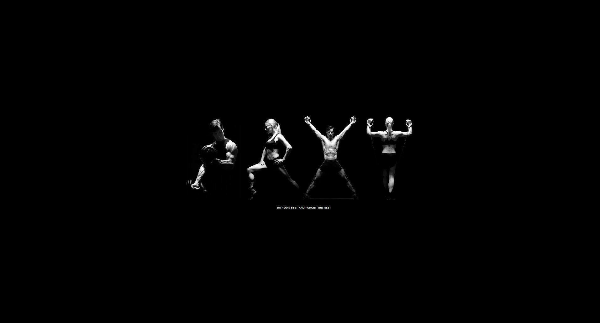

Introduction
Daily physical activity is crucial for maintaining good health and overall well-being. Engaging in regular exercise offers a multitude of benefits for both your physical and mental health. In this blog post, we will explore these advantages in detail.
Getting Started
If you're new to regular physical activity, it's important to start slowly and gradually increase your activity level. Consider consulting a healthcare professional before beginning any new exercise program, especially if you have pre-existing health conditions. Aim for at least 150 minutes of moderate-intensity aerobic activity or 75 minutes of vigorous-intensity aerobic activity per week.